천일염 = 굵은 소금
굵은 소금이 떨어져 마트에서 천일염 20Kg 포대를 사왔다.
기존 아파트는 베란다가 있어서 소금가마니 채 두고 살아왔다.
작년에 이사를 한 이곳은 베란다가 없는 아파트라서 굵은 소금을 포대로 두기엔 모양새가 그렇다.
그래서 이번에는 소금 항아리를 구입해서 보기 좋게 담아 두어야 겠다는 생각이 들었다.
항아리는 미세한 보이지 않는 구멍들로 숨을 쉬기 때문에 적당한 습도와 공기의 통풍으로 인해 음식을 오랫동안 신선하게 보관할수 있고 부패도 방지해준다는 장점이 있다. 특히, 굵은 소금의 간수가 덜 빠진 소금으로 김치를 담을 경우 간수에 들어있는 마그네슘이 쓴 맛을 내기 때문에 음식의 맛이 없다. 그래서 간수를 빼면 자극적인 쓴맛이 없어져 음식 맛을 좋게 해준다 라는 정보를 찾으니 더더욱 항아리에 관심에 갖게 되었다. .
굵은 천일 소금을 보관하기 위한 항아리를 살까?
폰으로 소금 항아리 가격대를 살펴보니 가격대가 그렇다.
집에 있는 빈 항아리에 그대로 소금을 담아보는 방법을 찾아볼까?
그러다 항아리에 구멍을 뚫고, 소금 항아리 만드는 방법을 알게 되었다.
그래서~~
빈 항아리를 이용하여
소금을 보관하기 위한 항아리 구멍 만들기를 시도하였다.
굵은 천일 소금 보관을 위한 소금 항아리 만드는 방법
거실에 큰 타올을 깔고 항아리를 놓는다.
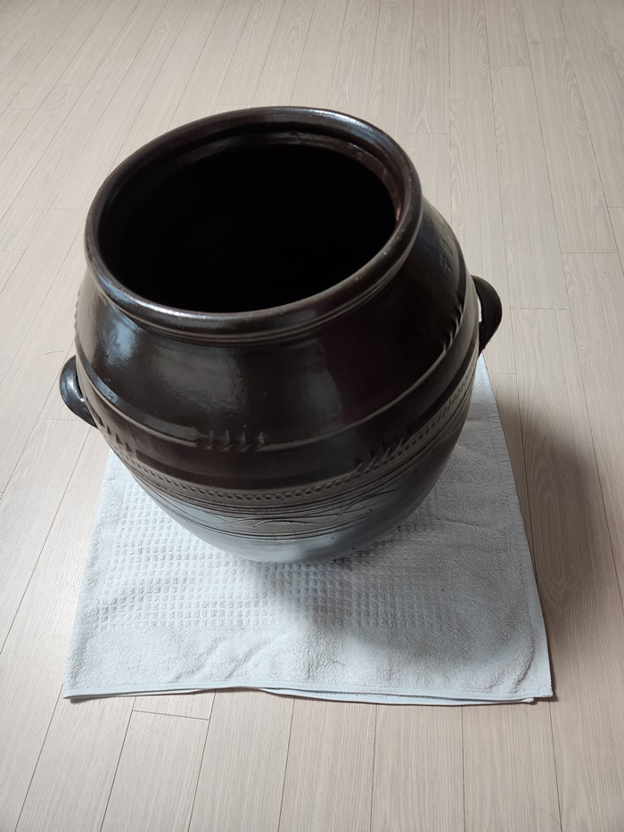
항아리 안과 밖으로 밑면에.청테이프를. ×+자로 붙인다.
테이프를 붙이지 않으면 옹기가 울림으로 깨지기 때문이다.
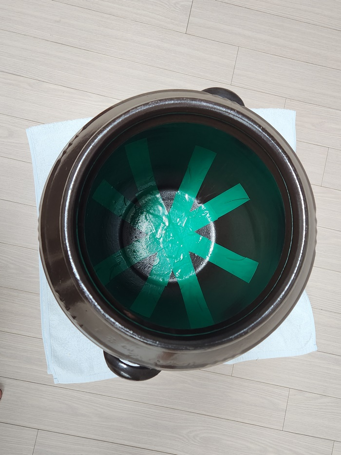
항아리를 뒤집어 놓고, 밑면에 싸인펜으로 작은 동그라미를 그린다.
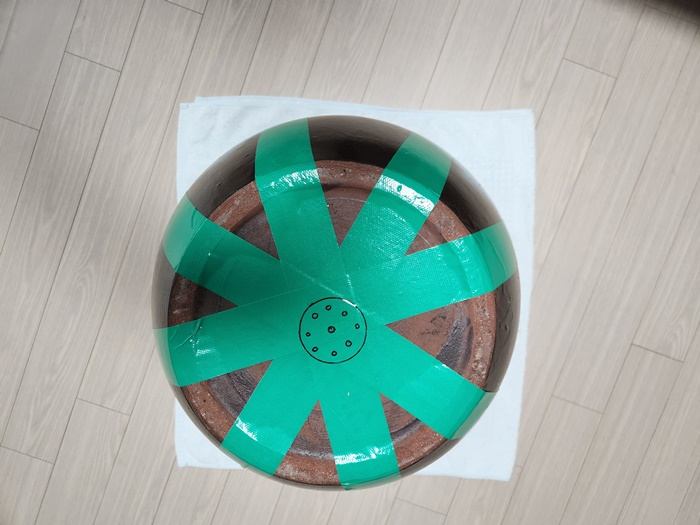
드릴을 동그라미 위치에 대고 구멍을 만들기 시작한다(아래 동영상 참고).
드릴로 살살~~ 항아리 구멍 내기 성공 ~~
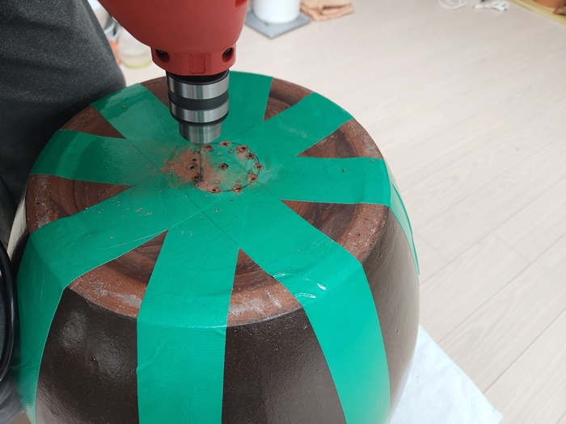
드릴 작업을 마치면
일자 드라이버와 망치로 살살 두둘겨서 중심부분을 뚫는다.
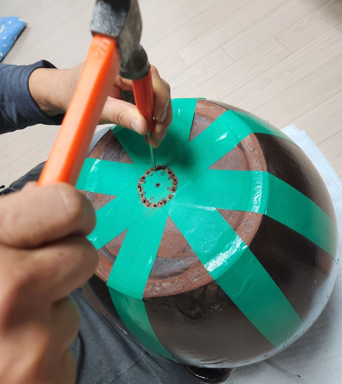
중심부 동그란 구멍이 생기면 청테이프 안과 밖을 제거한다
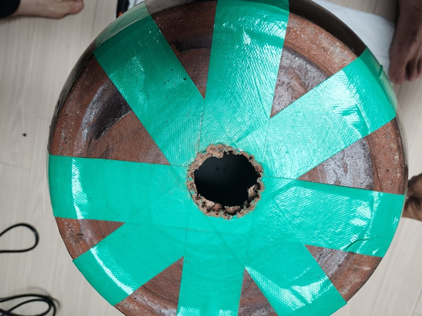 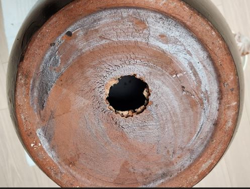
화분아래 부분 구멍을 막을 때 사용하는 화분 깔망을 이용한다.
깔망을 적당한 크기로 잘라서 항아리 안쪽 중심에 놓는다.
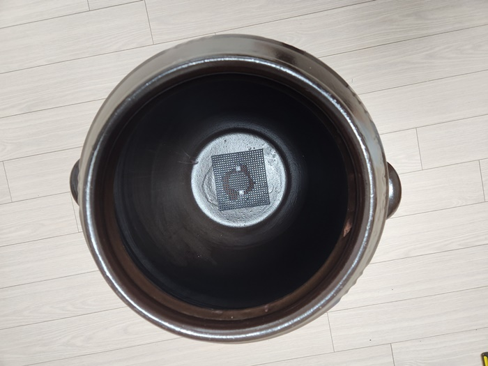
항아리 아래부분에 깔망을 놓은 후,
간수가 수월하게 빠질 수 있도록 돌맹이를 놓는다. .
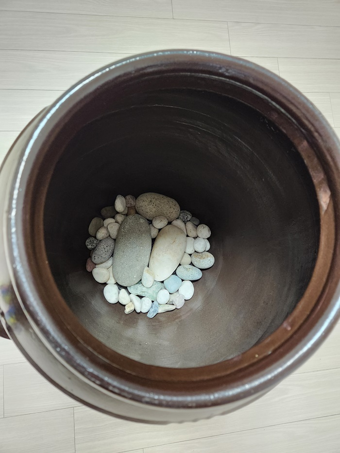
. .
돌맹이 위에 소금을 놓으면 ~ 염려가 되어?
소금이 아래로 빠지지 않도록 천을 깔아준다.
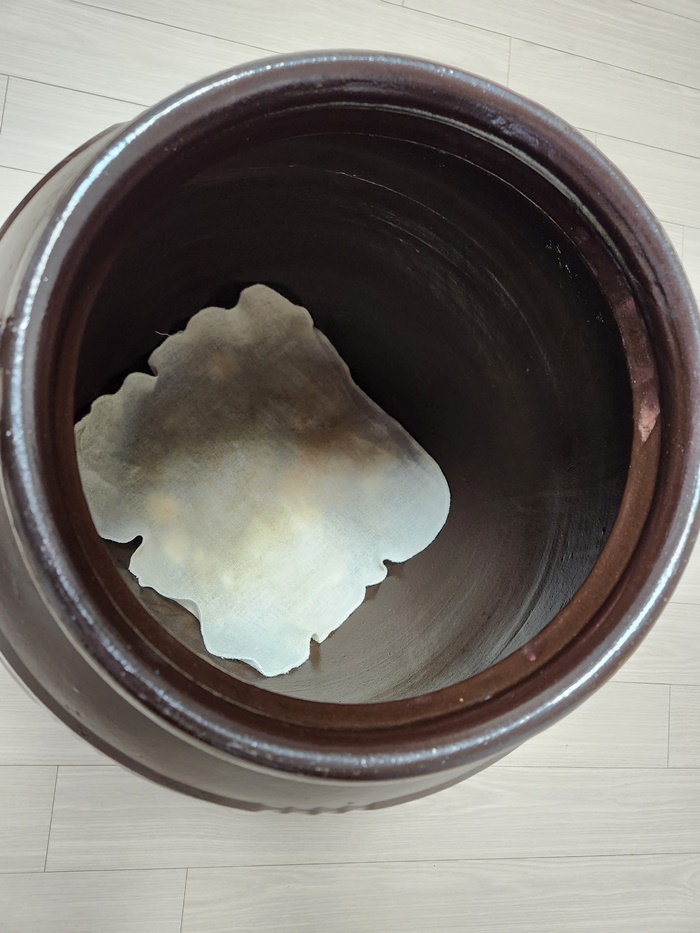
소금 항아리를 거실에서 작업을 마친 후
햇빛이 들어오지 않은 서늘한 장소로 옮기고~~
항아리 아래부분에 간수가 빠지도록 화분 물받침대를 이용했다.
화분 물받침대 위에 항아리를 올리고~
굵은 소금 한포대 20kg가 들어가네요.
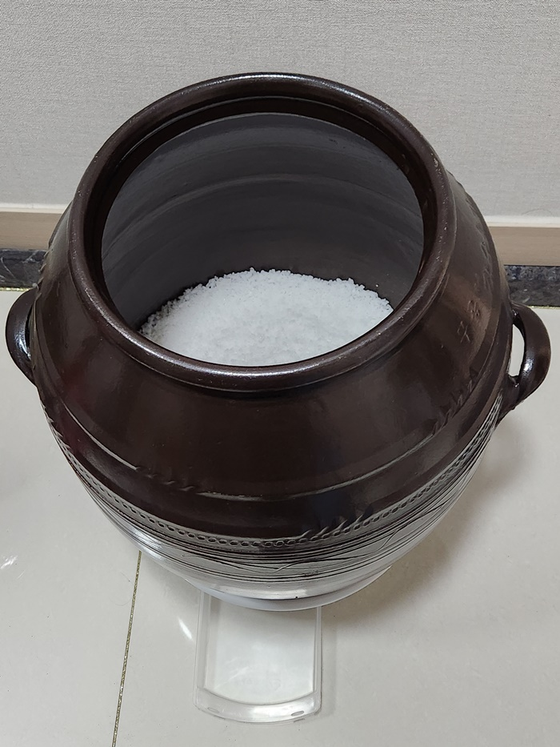
굵은 소금 두 포대~~
굵은 소금 두포대(40kg)가 들어가니 항아리에 가득 찼어요♡♡
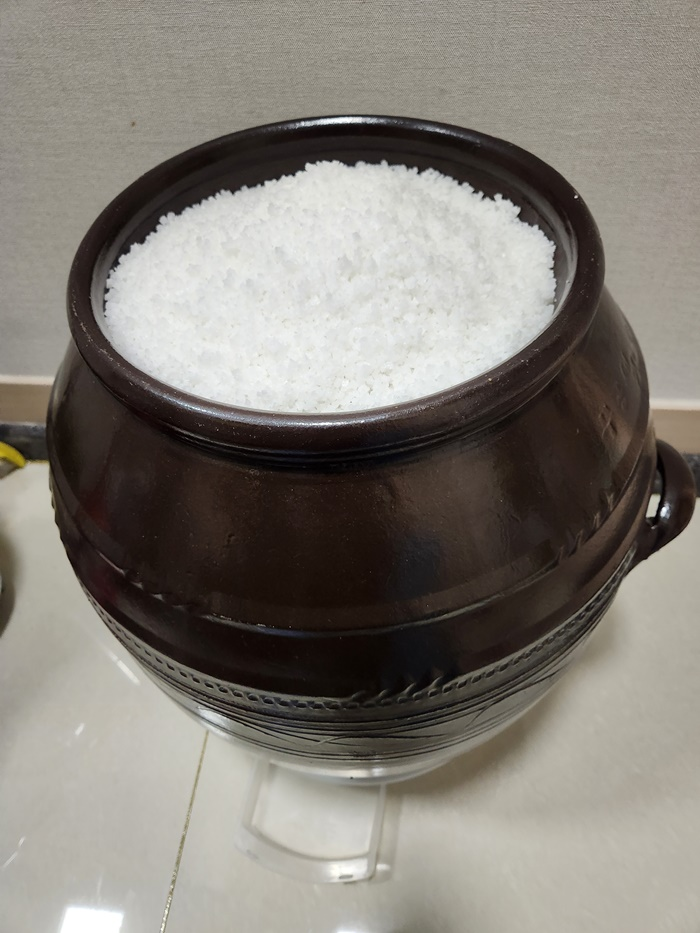
드디어
굵은 천일 소금을 가득 담은 소금 항아리!!!!
시간이 어느 정도 흐르고 나면~
얼음조각처럼 투명한 염화마그네슘 덩어리가 물받이에 나타날 것이다.
이 때
물받이 서랍을 빼서 간수를 버리거나
모아 두었다가 두부 만들 때 사용해도 되지요~~